Como saben los medios de entretenimiento son las películas, documentales, series, videojuegos y libros.
En este apartado mostraremos los mas conocidos y mejores medios en donde aparecen dinosaurios.
¡Hablamos de Piecito! Tras salir de Disney con cajas destempladas, el especialista en animación tradicional Don Bluth se puso a las órdenes de Spielberg y George Lucas para llevar a buen puerto una épica emocional sobre dinosaurios buscando su hogar. Tan popular que espoleó una longeva saga y, bueno, le dio a Spielberg la mitad de una idea… Michael Crichton se encargaría del resto.
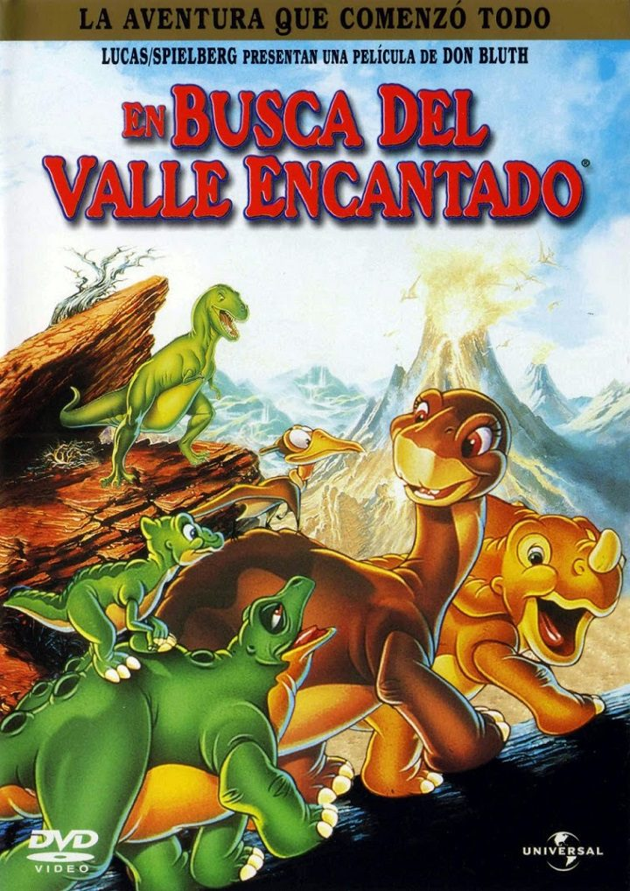Oh, no… Hablamos de uno de los mayores fracasos de Disney en toda su historia: tras haber experimentado a fondo con la animación CGI en Hércules y Tarzán, y tras los triunfos de Pixar en ese terreno, decidieron pasarse por completo al 3D con un argumento y unos personajes que, en fin, no estaban a la altura. Gertie se sentiría decepcionado.
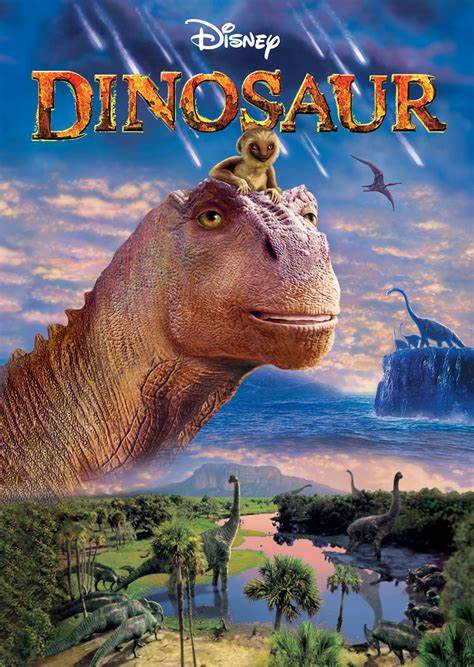El reboot de Parque Jurásico se aseguró de añadir la carga exacta de nostalgia… pero también incorporó nuevas especies de lagartos gigantes, claro. Nuestro favorito, así como el héroe secreto de este blockbuster, es el Indomitous Rex, una suerte de Dwayne Johnson jurásico que no está para bromas.
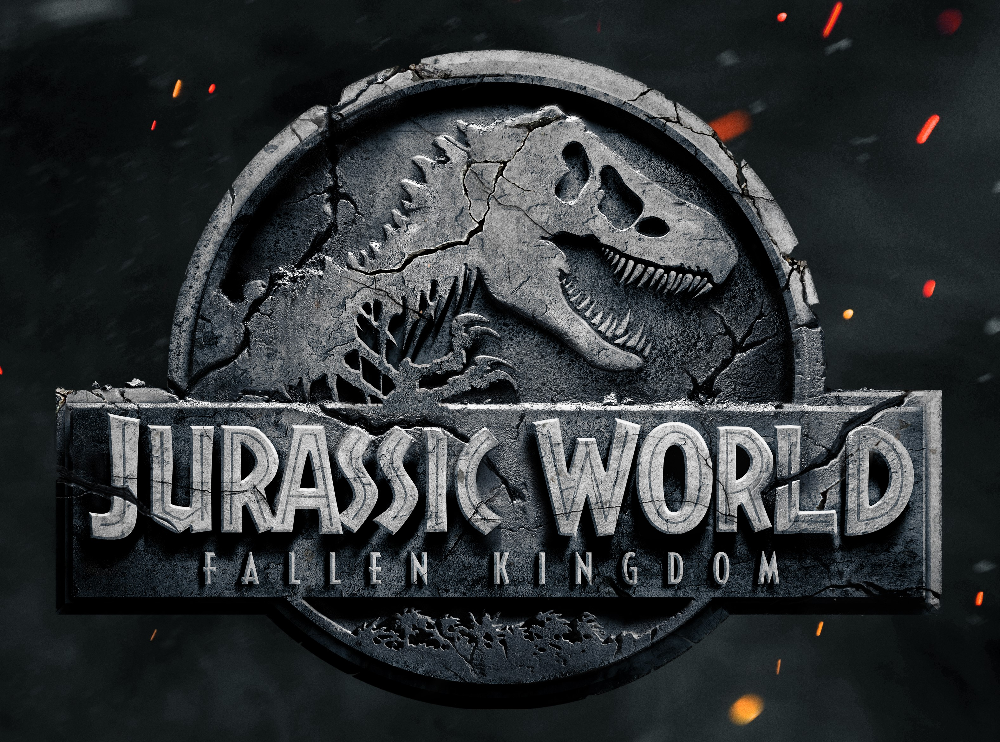Una de las pelis más raras de Pixar, sí. Pero, al mismo tiempo, es una historia de amistad entre opuestos que no sólo pulsa todas las notas emocionales correctas, sino que crece y crece a cada visionado.
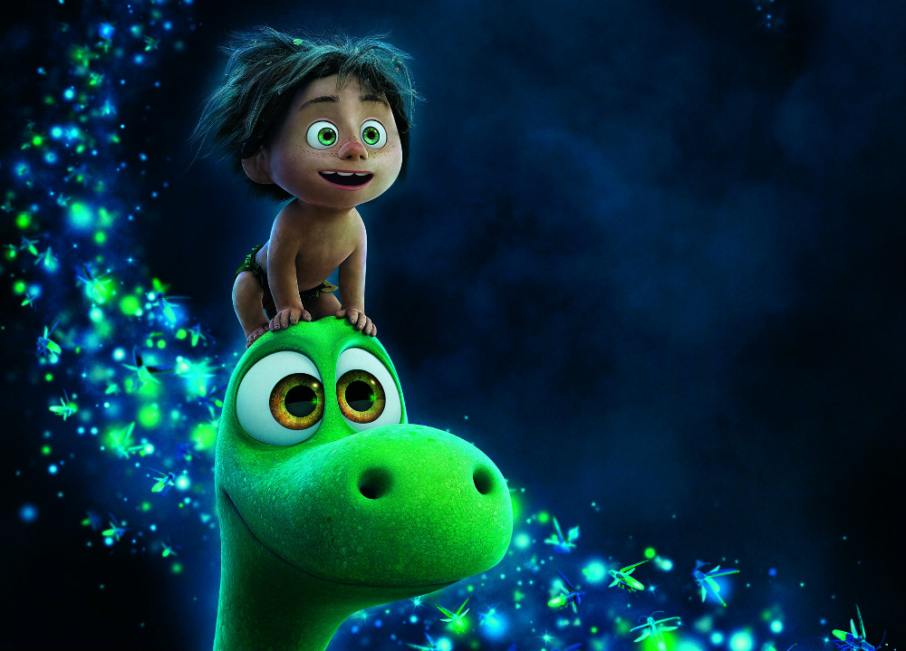Una de las mejores películas de la historia. Y punto. Estamos dispuestos a retar a un duelo a quien opine lo contrario, errores científicos aparte.
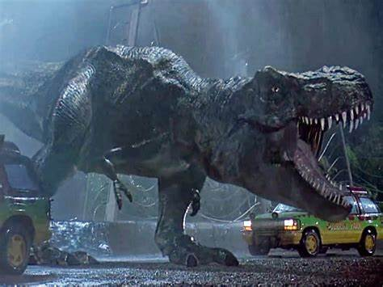Este documental se centra en dos especies: el sauroposeidon, el animal más alto que jamás haya existido, y el tyrannosaurus rex, el depredador más temido. Aprenderás sobre su reproducción, crecimiento y cómo enfrentaron desafíos y enemigos en su entorno
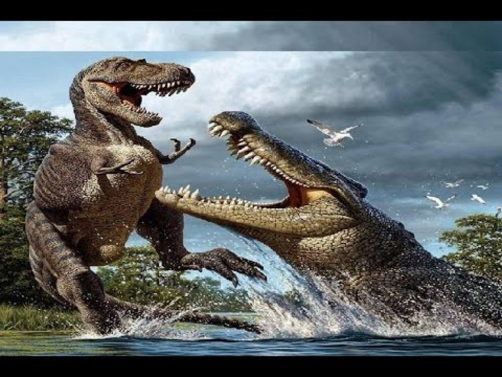Este documental de National Geographic explora un fósil que muestra una lucha a muerte entre un triceratops y un misterioso depredador. Se debate si este depredador podría ser una nueva especie de dinosaurio, como el nanotyrannus o un joven tyrannosaurus rex
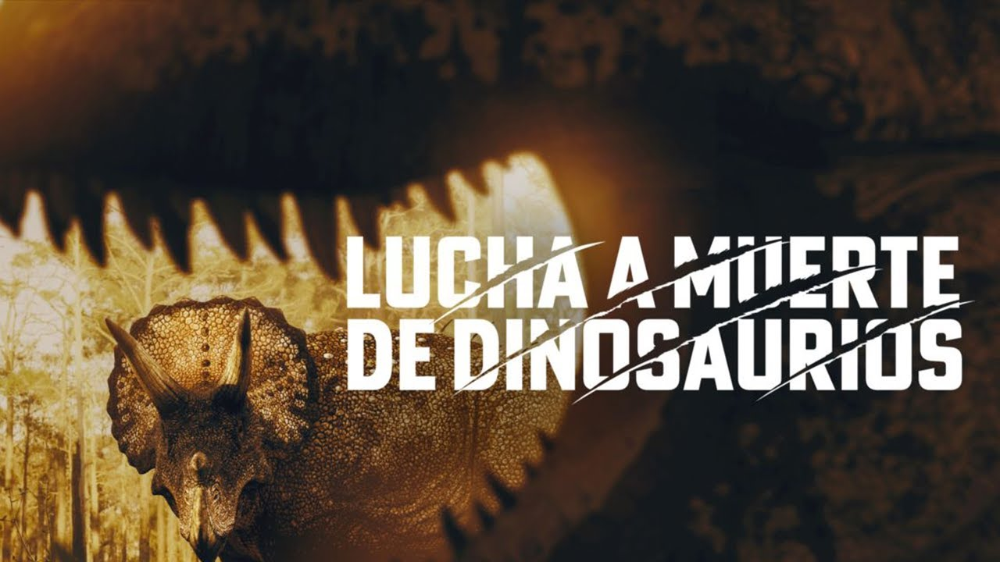Una docuserie de Apple TV+ que nos lleva a través de 5 ecosistemas principales para explorar la vida de los dinosaurios. Utiliza tecnología digital avanzada para recrear a estas criaturas y está narrada por David Attenborough
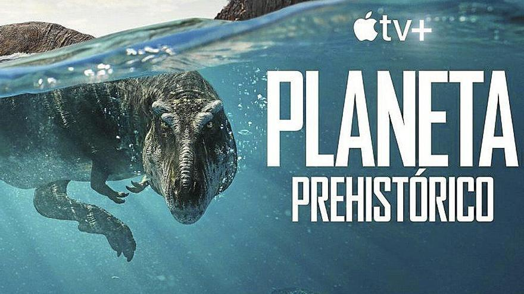En 2003, Jurassic Park parecía una saga un tanto olvidada. Los éxitos de Jurassic Park (1993) y El mundo perdido (1997) en el cine quedaban muy atrás, y Jurassic Park III parecía más un eco de un telefilm hinchado para ser presentado en formato cinematográfico que otra cosa. Vivendi Universal Games y Blue Tongue -en colaboración con Konami en algunas partes del mundo- decidieron darle la vuelta la tortilla a la mayoría de videojuegos basados en la licencia jurásica.
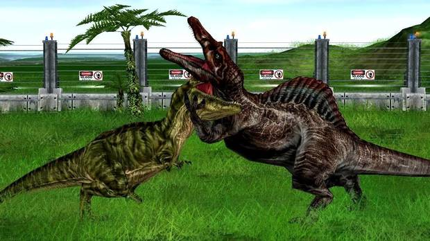El director neozelandés Peter Jackson conquistó las taquillas y los corazones de medio planeta con su adaptación cinematográfica de El señor de los anillos. En 2005, y tras recibir un buen puñado de premios de la Academia, decidió embarcarse en lo que se considera el capricho más caro del séptimo arte: su adaptación de King Kong. Universal Pictures le permitió dar rienda suelta a su imaginación, con una cinta de aventuras pluscuamperfecta que nos devolvió a la famosa Isla de la Calavera y que contó en su reparto con caras conocidas como Naomi Watts, Jack Black y Adrien Brody, así como un espectacular Andy Serkis como Kong. Y junto a la habitual plétora de productos y muñecos, llegó el videojuego, que estuvo a cargo de Ubisoft y que fue apadrinado, ni más ni menos, que por el creativo Michael Ancel.
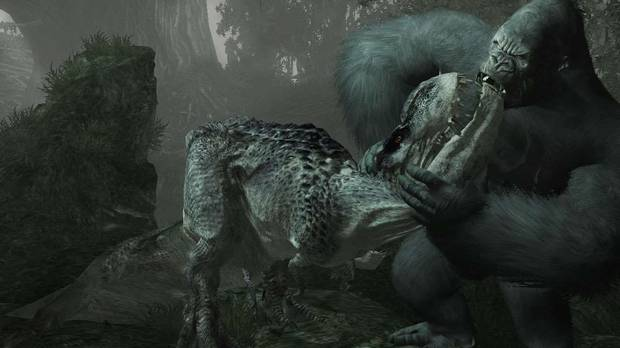Desde Vandal siempre hemos defendido una máxima: las mejores adaptaciones de películas al mundo de los videojuegos, casi siempre suelen tener los bloques y personajes LEGO como protagonistas. Si con Star Wars o Piratas del Caribe ya consiguieron establecer loables hitos para sus respectivos mundos y universos, con Jurassic Park y Jurassic World la historia se volvió a repetir. LEGO Jurassic World coincidió con el lanzamiento del film Jurassic World en 2015, devolviendo la saga de los dinosaurios creados con ingeniería genética de Spielberg al gran público.
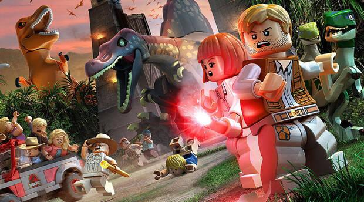Hace unos años, antes del boom de los battle royale, los videojuegos de supervivencia toparon la actualidad del mundo del ocio electrónico. Por doquier salían juegos que nos invitaban a sobrevivir en entornos peligrosos, selváticos o desérticos, mientras buscábamos las fórmulas necesarias para recoger materiales y recursos para construir refugios, hacer mejores armas o curarnos de las inclemencias del tiempo.
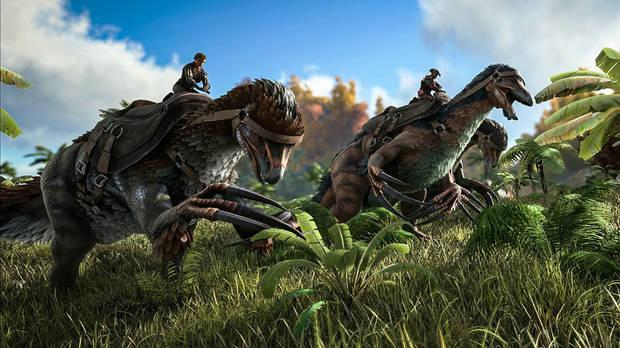Capcom consiguió sorprender a propios y extraños con Resident Evil, un videojuego que revivió el género survival horror, asentando las bases jugables para una serie de títulos que a posteriori cogerían y reformularían los ingredientes de su aventura con zombis, mutantes y toques gore y de terror. En el seno de la empresa japonesa, tras mucho pensarlo, decidieron ir un poco más allá: ¿por qué no usar la misma estructura con dinosaurios en lugar de no muertos? Dino Crisis en 1999 fue apadrinado y desarrollado por gran parte del equipo original de Resident Evil, incluyendo a Shinji Mikami entre ellos.
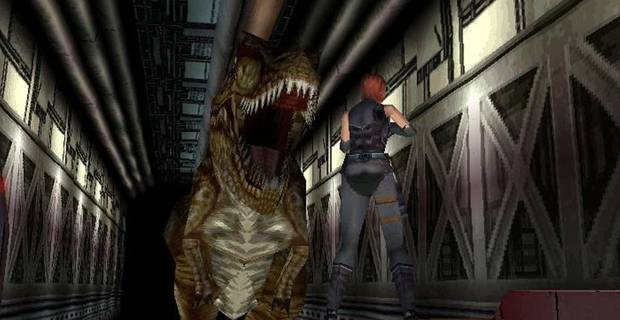Jurassic World Evolution 2 es la secuela del exitoso título de gestión de parques temáticos de Frontier. El juego sucede después de los eventos narrados en la película Jurassic World Fallen Kingdom (J.A. Bayona, 2018), por lo que nuestra misión principal será la de rescatar a los dinosaurios que campan a sus anchas por Estados Unidos y alrededores para proteger no sólo a la población humana sino también a ellos mismos de posibles peligros para los que no están preparados. En esta ocasión, los desarrolladores han aumentado la apuesta varios enteros.
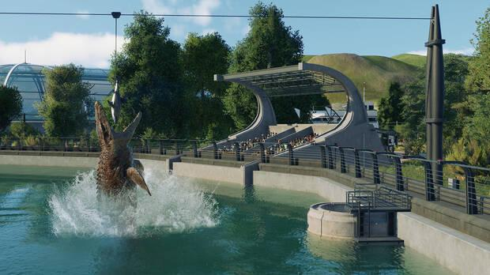Path of Titans es, sin lugar a dudas, el juego de dinosaurios más completo en mucho tiempo y eso que aún está en acceso anticipado. Como título de juego multijugador masivo nos permitirá disfrutar de una experiencia de rol prehistórica en PC, consolas y teléfonos móviles, contando con juego cruzado y la posibilidad de controlar a 18 dinosaurios diferentes en su colección base, todo ello en un ecosistema muy rico y realista con capacidad para 200 jugadores, que además se aderezan con un catálogo de criaturas controladas por la IA, que ayudan a dar riqueza a los entornos.
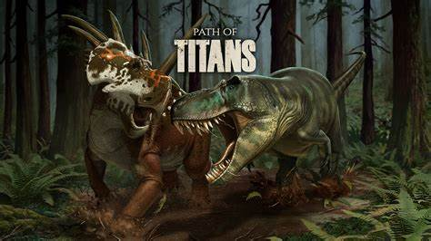Esta icónica sitcom animada gira en torno a la familia Sinclair, un grupo de dinosaurios del Cretácico. Con personajes inolvidables como Earl, el malhumorado padre, Rex, el torpe hijo adolescente, y Baby Sinclair, el bebé dinosaurio que nos dejó la célebre frase “Tú no mami”. Además de entretener, la serie abordó temas sociales de forma inteligente y satírica
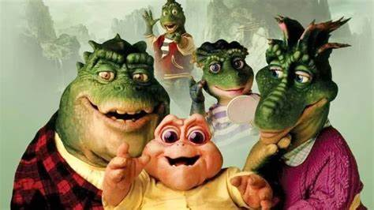Esta serie documental de la BBC, narrada por David Attenborough, utiliza tecnología CGI para recrear el mundo de los dinosaurios con un detalle espectacular. Una experiencia visual impresionante para los amantes de la paleontología
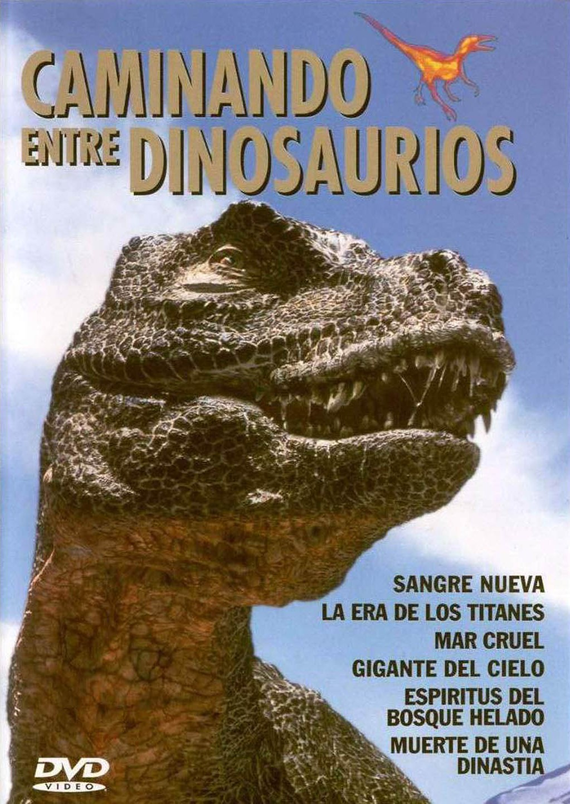Basada en la novela homónima de Arthur Conan Doyle, esta miniserie de acción y aventuras sigue las peripecias del explorador Challenger y su equipo en una isla misteriosa habitada por dinosaurios. Enfrentándose a un peligroso T-Rex y astutos Velociraptores, la serie ofrece emoción y suspenso
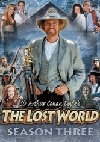Una producción de ciencia ficción que sigue a una familia que viaja al pasado para colonizar una Tierra prehistórica.
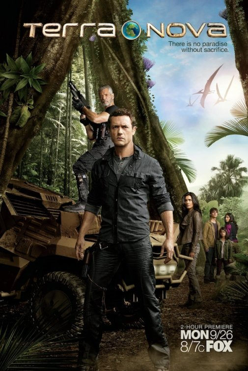Una serie animada ambientada en el universo de Jurassic Park, donde un grupo de adolescentes lucha por sobrevivir en una isla infestada de dinosaurios.
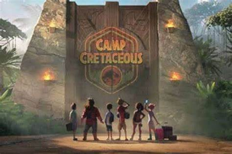(publicada como "Genndy Tartakovsky's Primal") es una serie animada de televisión para adultos estadounidense-francesa creada y dirigida por Genndy Tartakovsky que se estrenó el 7 de octubre de 2019 en Adult Swim.
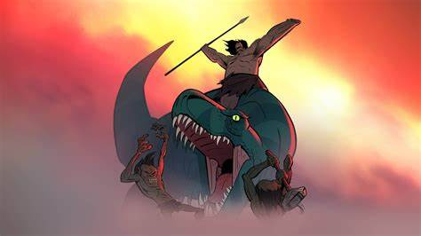Estas dos novelas son las que iniciaron todo. Combina ciencia ficción y tecnothriller, y son imprescindibles para cualquier amante de los dinosaurios.
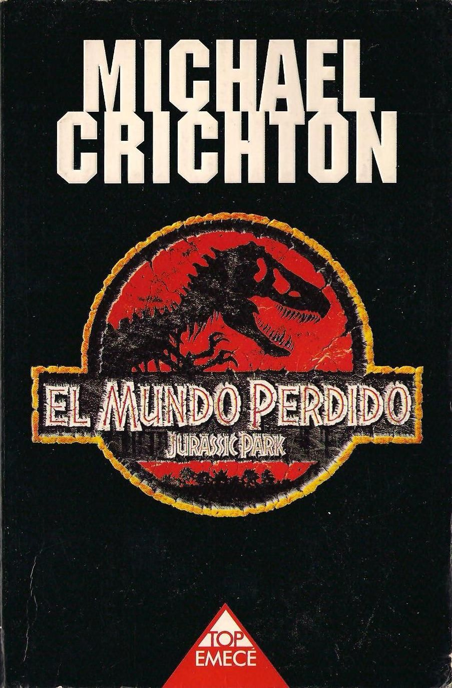En esta serie, Sawyer nos presenta un mundo similar a la Tierra habitado por una raza evolucionada de tiranosaurios, los Quintaglio. Aunque no está disponible en castellano, podría ser un buen momento para explorarla.
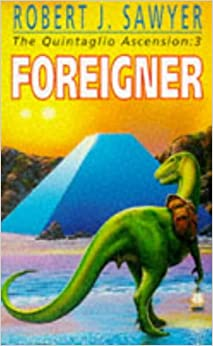Esta novela de aventuras tiene al profesor Challenger como protagonista y ha sido adaptada al cine y la televisión. La versión escrita por Doyle es un clásico que vale la pena leer.
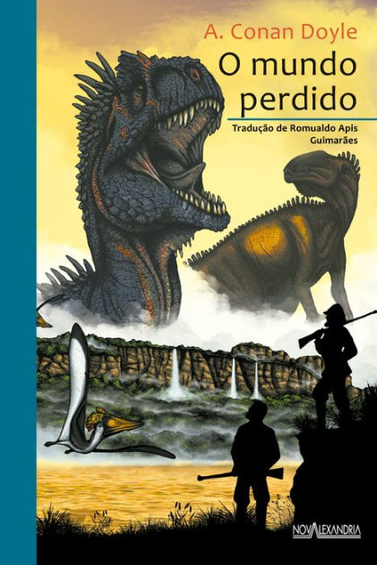